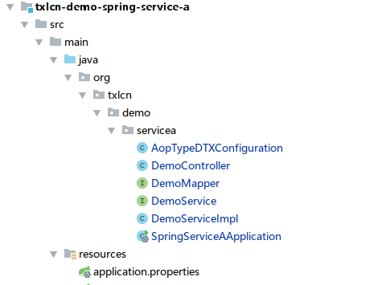
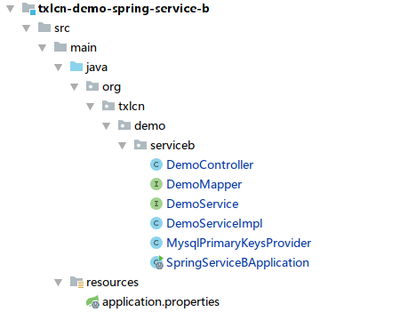
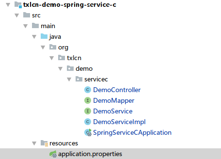
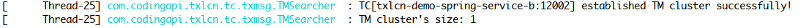

中

 Documents
Documents
- User Guide
SpringCloud示例
SpringCloud 示例说明
共三个模块如下：
SpringServiceA (发起方 | LCN模式)
SpringServiceB (参与方 | TXC模式)
SpringServiceC (参与方 | TCC模式)
代码地址:https://github.com/codingapi/txlcn-demo
一、调用关系说明:
- SpringServiceA -> DemoController的
txlcn的Mapping是调用发起方法，代码如下。
@RestController
public class DemoController {
private final DemoService demoService;
@Autowired
public DemoController(DemoService demoService) {
this.demoService = demoService;
}
@RequestMapping("/txlcn")
public String execute(
@RequestParam("value") String value,
@RequestParam(value = "ex", required = false) String exFlag) {
return demoService.execute(value, exFlag);
}
}
- demoService.execute(value, exFlag)代码:
@Service
@Slf4j
public class DemoServiceImpl implements DemoService {
private final DemoMapper demoMapper;
private final ServiceBClient serviceBClient;
private final ServiceCClient serviceCClient;
@Autowired
public DemoServiceImpl(
ClientDemoMapper demoMapper,
ServiceBClient serviceBClient,
ServiceCClient serviceCClient) {
this.demoMapper = demoMapper;
this.serviceBClient = serviceBClient;
this.serviceCClient = serviceCClient;
}
@Override
@LcnTransaction
public String execute(String value) {
// ServiceB
String dResp = serviceBClient.rpc(value);
// ServiceC
String eResp = serviceCClient.rpc(value);
// Local transaction
Demo demo = new Demo();
demo.setGroupId(DTXLocalContext.getOrNew().getGroupId());
demo.setDemoField(value);
demo.setAppName(Transactions.APPLICATION_ID_WHEN_RUNNING);
demo.setCreateTime(new Date());
demoMapper.save(demo);
// 置异常标志，DTX 回滚
if (Objects.nonNull(exFlag)) {
throw new IllegalStateException("by exFlag");
}
return dResp + " > " + eResp + " > " + "ok-service-a";
}
}
- ServiceBClient.rpc(value)代码:
@Service
@Slf4j
public class DemoServiceImpl implements DemoService {
private final DemoMapper demoMapper;
@Autowired
public DemoServiceImpl(DemoMapper demoMapper) {
this.demoMapper = demoMapper;
}
@Override
@TxcTransaction(propagation = DTXPropagation.SUPPORTS)
@Transactional
public String rpc(String value) {
Demo demo = new Demo();
demo.setGroupId(TracingContext.tracing().groupId());
demo.setDemoField(value);
demo.setAppName(Transactions.getApplicationId());
demo.setCreateTime(new Date());
demoMapper.save(demo);
return "ok-service-b";
}
}
- ServiceCClient.rpc(value)代码：
@Service
@Slf4j
public class DemoServiceImpl implements DemoService {
private final DemoMapper demoMapper;
private ConcurrentHashMap<String, Long> ids = new ConcurrentHashMap<>();
@Autowired
public DemoServiceImpl(DemoMapper demoMapper) {
this.demoMapper = demoMapper;
}
@Override
@TccTransaction(propagation = DTXPropagation.SUPPORTS)
@Transactional
public String rpc(String value) {
Demo demo = new Demo();
demo.setDemoField(value);
demo.setCreateTime(new Date());
demo.setAppName(Transactions.getApplicationId());
demo.setGroupId(TracingContext.tracing().groupId());
demoMapper.save(demo);
ids.put(TracingContext.tracing().groupId(), demo.getId());
return "ok-service-c";
}
public void confirmRpc(String value) {
log.info("tcc-confirm-" + TracingContext.tracing().groupId());
ids.remove(TracingContext.tracing().groupId());
}
public void cancelRpc(String value) {
log.info("tcc-cancel-" + TracingContext.tracing().groupId());
Long kid = ids.get(TracingContext.tracing().groupId());
demoMapper.deleteByKId(kid);
}
}
二、工程代码概览
- 事务发起方，txlcn-demo-spring-service-a
- 工程截图
 - 项目配置文件 application.properties
##################
# 这个是启动本服务的配置文件，其它的application-xxx.properties 是开发者的个性化配置，不用关心。
# 你可以在 https://txlcn.org/zh-cn/docs/setting/client.html 看到所有的个性化配置
#################
spring.application.name=txlcn-demo-spring-service-a
server.port=12011
spring.datasource.driver-class-name=com.mysql.jdbc.Driver
## TODO 你的配置
spring.datasource.url=jdbc:mysql://127.0.0.1:3306/txlcn-demo?\
characterEncoding=UTF-8&serverTimezone=UTC
spring.datasource.username=root
spring.datasource.password=root
spring.datasource.hikari.maximum-pool-size=20
mybatis.configuration.map-underscore-to-camel-case=true
mybatis.configuration.use-generated-keys=true
logging.level.com.codingapi.txlcn=DEBUG
# 关闭Ribbon的重试机制（如果有必要）
ribbon.MaxAutoRetriesNextServer=0
ribbon.ReadTimeout=5000
ribbon.ConnectTimeout=5000
- 启动类
@SpringBootApplication
@EnableDiscoveryClient
@EnableDistributedTransaction
public class SpringServiceAApplication {
public static void main(String[] args) {
SpringApplication.run(SpringServiceAApplication.class, args);
}
}
- 事务参与方，txlcn-demo-spring-service-b
- 工程截图
 - 项目配置文件 application.properties
##################
# 这个是启动本服务的配置文件，其它的application-xxx.properties 是开发者的个性化配置，不用关心。
# 你可以在 https://txlcn.org/zh-cn/docs/setting/client.html 看到所有的个性化配置
#################
spring.application.name=txlcn-demo-spring-service-b
server.port=12002
spring.datasource.type=com.alibaba.druid.pool.DruidDataSource
spring.datasource.driver-class-name=com.mysql.jdbc.Driver
## TODO 你的配置
spring.datasource.url=jdbc:mysql://127.0.0.1:3306/txlcn-demo\
?characterEncoding=UTF-8&serverTimezone=UTC
spring.datasource.username=root
spring.datasource.password=root
#spring.datasource.hikari.maximum-pool-size=20
mybatis.configuration.map-underscore-to-camel-case=true
mybatis.configuration.use-generated-keys=true
logging.level.com.codingapi.txlcn=DEBUG
- 启动类
@SpringBootApplication
@EnableDiscoveryClient
@EnableDistributedTransaction
public class SpringServiceBApplication {
public static void main(String[] args) {
SpringApplication.run(SpringServiceBApplication.class, args);
}
}
- 事务参与方，txlcn-demo-spring-service-c
- 工程截图
 - 项目配置文件 application.properties
##################
# 这个是启动本服务的配置文件，其它的application-xxx.properties 是开发者的个性化配置，不用关心。
# 你可以在 https://txlcn.org/zh-cn/docs/setting/client.html 看到所有的个性化配置
#################
spring.application.name=txlcn-demo-spring-service-c
server.port=12003
spring.datasource.driver-class-name=com.mysql.jdbc.Driver
## TODO 你的配置
spring.datasource.url=jdbc:mysql://127.0.0.1:3306/txlcn-demo\
?characterEncoding=UTF-8&serverTimezone=UTC
spring.datasource.username=root
spring.datasource.password=root
spring.datasource.hikari.maximum-pool-size=20
mybatis.configuration.map-underscore-to-camel-case=true
mybatis.configuration.use-generated-keys=true
logging.level.com.codingapi.txlcn=DEBUG
- 启动类
@SpringBootApplication
@EnableDiscoveryClient
@EnableDistributedTransaction
public class SpringServiceCApplication {
public static void main(String[] args) {
SpringApplication.run(SpringServiceCApplication.class, args);
}
}
三、启动SpringCloud微服务
事务参与方 ServiceB

事务参与方 ServiceC
事务发起方 ServiceA